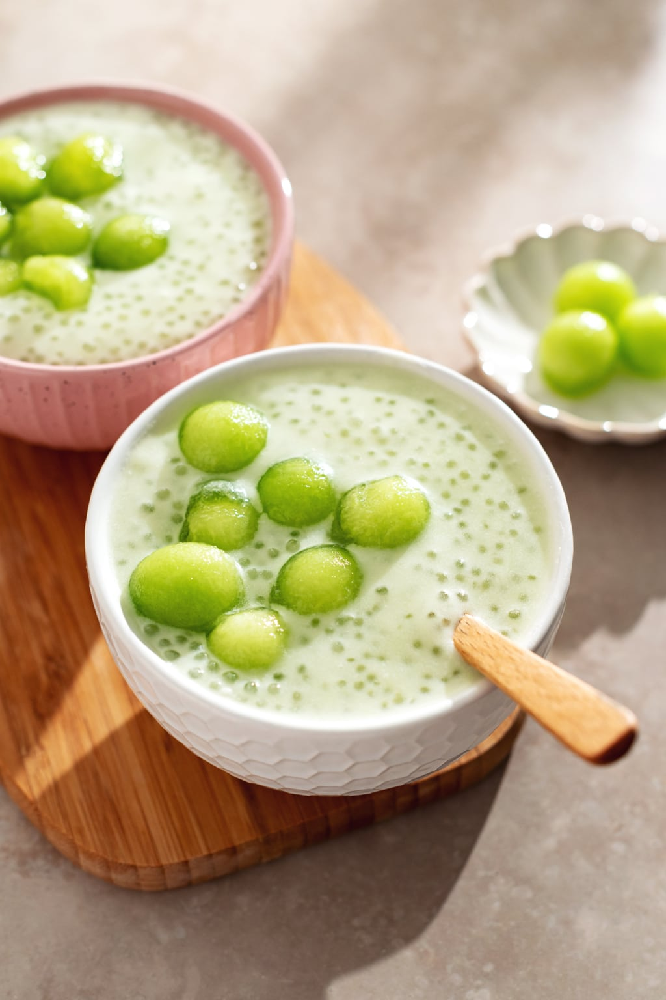

Melon Sago

tapioca pudding made with fresh honeydew and coconut milk
Ingredients
- Honeydew - You'll need a small or medium ripe honeydew melon. Ripe honeydews are sweeter and have a stronger honeydew flavour.
- Coconut milk - Use one can of coconut milk. You can use any kind but I prefer full-fat coconut milk like the Aroy-D brand.
- Granulated sugar - You can adjust the amount of sugar to your liking.
- Tapioca pearls - Use small tapioca pearls or sago. They're usually sold at Asian grocery stores or in the Asian food aisle in a clear bag of tiny white beads.
How to
- Scoop out honeydew into little balls save the remainder
- Add honeydew remains into blender with coconut milk and sugar
- Chill the mixture
- Cook tapioca pearls
- Drain pearls and add to cooled mixture
- Serve with honeydew scoops